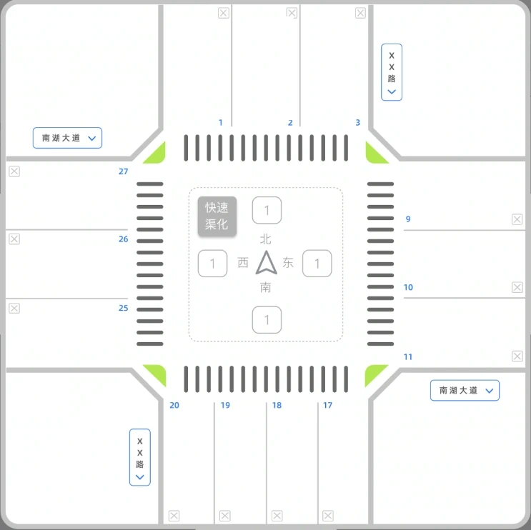
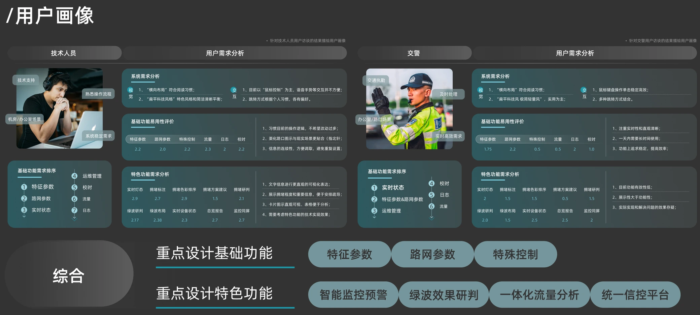
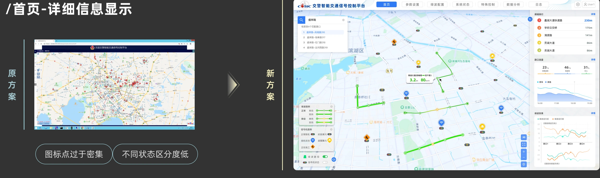

Aerospace Dawei · Complex operational systems
Helping traffic officers reach common actions faster
Reworked map information hierarchy and key configuration paths for a traffic signal control platform, delivering 30+ high-fidelity screens.
30+ high-fidelity screens and component specifications handed to development after client review.

Interactive reconstruction
Drag a movement onto a lane
Drag a symbol from the right and release it on a lane in the junction. The arrow updates immediately, oriented to approaching traffic.
Lane movements
Junction layout

Why edit on the junction itself?
A right turn looks different on the north and west approaches. Dropping the symbol onto the lane lets the operator see both the location and its new movement in context.
What I would test
I would ask an operator to assign a right turn to north lane 2, then to west lane 26. The arrows should point left and down on the diagram, respectively. Releasing a symbol over the crossing should leave both lanes untouched.
Design approach
How can traffic officers start a configuration task while keeping the current intersection in view?
- Identify common tasksUse interviews and competitor analysis to find key actions
- Reorganise entry pointsBring common actions and intersection details back to the map
- Design the configuration viewPut the intersection layout next to its settings
Identify friction in real tasks
As project lead, I interviewed seven core users and studied 10+ comparable systems. Traffic officers need to find intersections, check their status, and open the right configuration tool. The old map was dense and status markers were hard to distinguish. Users had to identify the target and remember which menu contained the next action.
I focused the redesign on two goals: making relevant states easier to recognise on the map and preserving the active intersection when users move into configuration.
Two roles, two kinds of decisions
I conducted semi-structured interviews with five technical staff and two traffic officers, covering their work habits, core tools, and specialist features. The detailed benchmarking sample included four direct competitors, one open-source project, and one product from an adjacent category, compared across structure, features, and presentation.


How the findings shaped the interface
| Research finding | Design rationale | Where it appears |
|---|---|---|
| Technical staff prioritised configuration and road-network parameters. Traffic officers prioritised live status. | Let both roles locate the intersection first, then inspect its status or open relevant settings. | Keep the selected intersection in context across the map and side panel. |
| Benchmarking suggested shallow navigation for frequent tasks and clearly separated feature areas. | Promote common actions to the home screen and move secondary tools out of the primary work area. | Put the map and frequent actions in the same view to reduce switching. |
| The interviews pointed to a dense map and a need to distinguish device status from congestion. | Separate information types and use colour, icons, and hierarchy to support scanning. | Use consistent status cues across map markers, labels, and details. |

Turn information architecture into interactions
I prioritised the path from checking overall conditions to finding an intersection and configuring it, then addressed less common entry points. This provided a real task for checking whether the menu structure and page layouts worked together.
- Put actions where decisions happen
- The map and intersection details sit side by side, with common actions available through overlays or shortcuts between levels. Once officers confirm the status, they can proceed from the same context.
- Keep the intersection visible during configuration
- In the lane editor, operators drag a movement from the right onto a lane on the left. Releasing it updates that lane in place. Signal-group editing also keeps the junction plan visible for reference.


Deliverables and validation approach
I delivered 30+ high-fidelity screens and prepared component guidelines for maps, buttons, and operational controls. The client approved the proposal and the designs were handed over to development.
- How to check the interaction path
- In a walkthrough, ask users to find a target intersection on the map and change its configuration. Check whether they find the entry point, count page switches, and see whether they can identify the active intersection throughout.